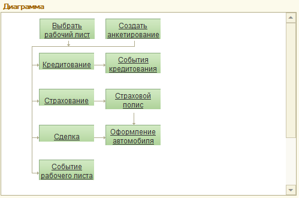

Обработка представляет собой рабочее место менеджера по продажам автомобилей. Позволяет отслеживать состояние рабочих листов, перейти к другим АРМ для оформления сделки или выполнения различных операций по сделке.
Интерфейс "АРМ Автосалон". Является основной формой АРМ. Форма состоит из следующих элементов:
Панель "Заголовок". Содержит строку поиска. Поиск осуществляется по документам "Рабочий лист". Критериями для поиска служат наименование (ФИО) клиента и номер телефона клиента (основной телефон), а также следующие реквизиты рабочего листа: номер документа, наименование клиента и телефон клиента, модель автомобиля и пользователи(участники). Полученные в результате поиска документы отображаются в списке рабочих листов.
Кнопка "Настройка полей поиска". Служит для указания перечня полей, по которым производится поиск документов. В форме настройки полей поиска обязательно должно быть выбрано хотя бы одно поле.
Флаг "Только мои клиенты". Позволяет отображать только рабочие листы, автором которых является текущий пользователь.
Рабочие листы. Список документов "Рабочий лист". Кнопка "Незапланированные" позволяет отключить видимость документов, которые "запланированы". Запланированным считается рабочий лист, на основании которого введен документ "Событие" с состоянием "запланировано" и датой события больше текущей даты. Кнопка "Без отказов" позволяет отключить видимость рабочих листов со статусом "Отказ".
События рабочего листа. В зависимости от состояния переключателя отображается дерево событий, которое строится по рабочему листу в текущей строке списка, либо дерево по событиям клиента из рабочего листа, либо диаграмма. Двойным щелчком по виду события можно открыть форму ввода нового события данного вида. Двойной щелчок по событию открываем форму данного события. В дерево событий также выводятся документы вида "Опрос", "Тест-драйв", "Заказ на автомобиль".

Поле "Информация о клиенте". Содержит сведения о клиенте рабочего листа в текущей строке списка.
Поле "Контактная информация". Показывает контактную информацию клиента рабочего листа в текущей строке списка, а также других контрагентов, контактным лицом которых он является.
Поле "Информация по рабочему листу". Показывает сведения по рабочему листу в текущей строке списка.
Панель основных действий. Содержит кнопки основных действий и контекстных переходов между АРМ.
«Подбор автомобилей» Переход к подбору автомобиля для рабочего листа. В списке автомобилей курсор будет спозиционирован на текущем автомобиле рабочего листа. При переходе обратно в АРМ Автосалон, если автомобиль был изменен, пользователю будет предложено изменить автомобиль в рабочем листе.
«Заказы» Переход к списку заказов на автомобиль, введенных на основании рабочего листа. Если заказов не найдено, то задается вопрос о вводе нового документа "Заказ на автомобиль" на основании рабочего листа, если заказ найден - курсор будет спозиционирован на данном заказе. При переходе обратно в АРМ Автосалон, если автомобиль был изменен, пользователю будет предложено изменить автомобиль в рабочем листе.
«Тест-драйв» Переход к документу "Тест-драйв", введенному на основании рабочего листа. Документ становится текущим в открытом АРМ. Если документ не найден - будет создан новый документ "Тест-драйв". При переходе обратно в АРМ Автосалон, если тест-драйв был проведен на автомобиле другой модели, пользователю будет предложено изменить модель автомобиля в рабочем листе.
«Календарь». Если по рабочему листу в текущей строке списка имеются введенные на основании события, то при контекстном переходе задается вопрос об установке отбора по данному рабочему листу. Переход к календарю с установленным отбором позволит увидеть только эти события на календаре. Календарь будет открыт с позиционированием на последнем событии. Переход к календарю без отбора позволит увидеть все события в базе и выбрать подходящее время для того, чтобы запланировать новое событие по рабочему листу.
Основные действия:
Печать - печать списка рабочих листов.
Звонок клиенту - переход к обработке "СофтФон".
SMS клиенту - переход к созданию нового SMS сообщения
E-mail клиенту - переход к созданию нового электронного письма